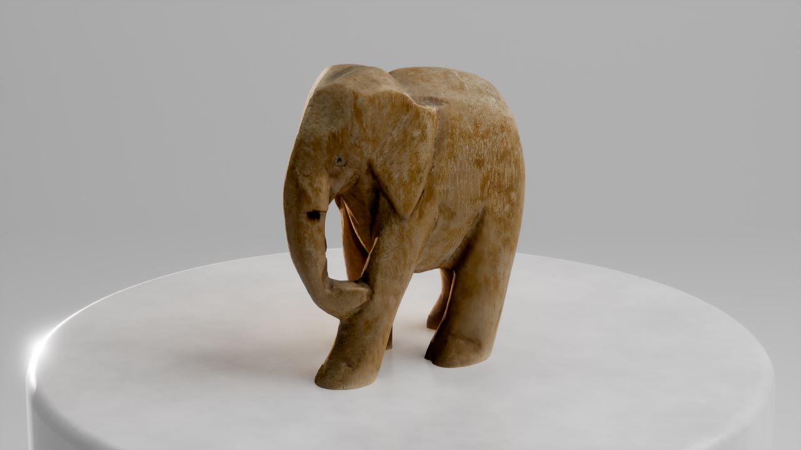
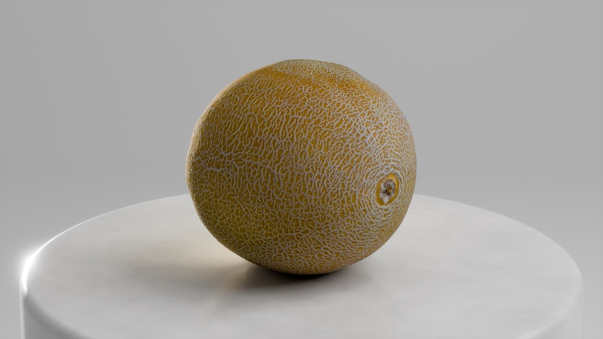
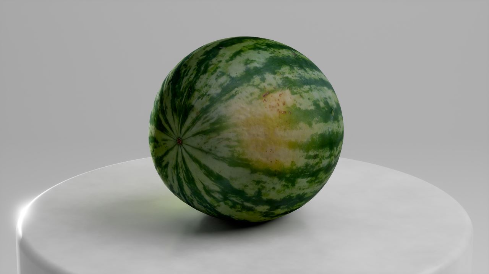
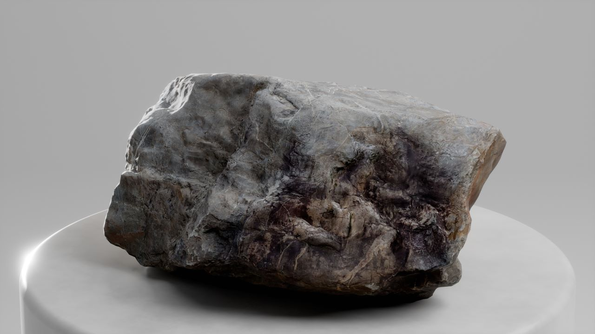
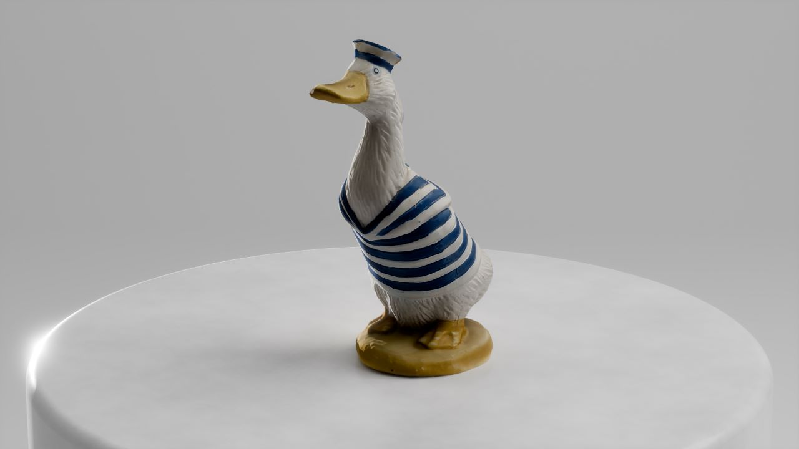
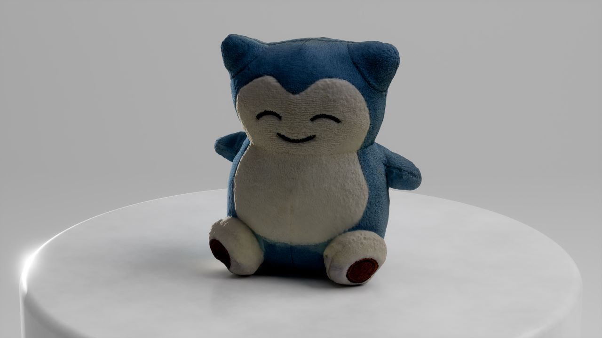

PHOTOGRAMMETRY
October 8th 2024
What is photogrammetry?
Photogrammetry is a technique used to create 3D meshes from photographs.
It's essentially recreating a real-life object into a mesh that you can use in 3D-software.
Using various algorithms and photographs from different angles of an object, the computer can analyze and figure out where certain points are in 3D-space.
This results in a point cloud, which contains all the points the algorithm could figure out.
After this is finished, another algorithm is applied which turns the point cloud into a 3D-mesh that is usable by all popular 3D-software.
It's very simply put just a 'connect the dots' puzzle for the computer but now in 3D.
There are also other methods that give similar results such as LiDAR scanning. These methods don't rely on images but rather on sensors.
Scanned using KIRI Engine PRO. ~200 photos, auto object masking, ultra detail, 4k textures.
What apps to use?
Choosing the right photogrammetry app for you is important for getting the best result.
Mostly these apps do pretty much the same thing, but some of them have additional features that you might want to consider.
These features include things like 3D gaussian splatting, AI-powered tools, object masking, etc.
In this chapter we will be comparing apps and programs so you can make an educated decision in which app you will use.
KIRI Engine
KIRI Engine is a photogrammetry app available for iOS and Android and is in my experience the best app for 3D-scanning on your phone.
It offers great features like 3D gaussian splatting, auto object masking, texture smoothing, etc.
It also allows you to upload images or videos from your local storage which is a feature I seem to be missing on a lot of other apps.

Scanned using KIRI Engine PRO. ~250 photos, auto object masking, ultra detail, 4k textures.
In the free version of the app you get unlimited projects, up to 100 photos, three free exports per week, and more.
So you can scan whenever and whatever you want, you just can't export it immediately which is honestly one of the best free models I have seen in photogrammetry apps.
You can always just preview your scans and see if you like them or not and they will be saved for you to export another week.
In the paid version, which is either $17.99 per month or $79.99 per year, you get up to 300 photos per project, upload local images/videos, unlimited exports, priority queue, and more.
As you can tell, the paid version offers a lot even with the great free version.
You would have to decide for yourself if the paid version would be worth it.
Find out more on the official KIRI Engine website
Meshroom
Meshroom is a free alternative to many paid apps and instead uses your computer hardware to create the mesh and textures.
The program requires an NVIDIA GPU for dense, high quality mesh generation somake sure to look at the system requirements on the Meshroom website.
The recommended amount of RAM is 32GB, just so everything goes a lot quicker but you will be able to run it with less.
The interface is quite intimidating but once you know what buttons to press, you shouldn't have to worry about it to much.
Once you get it up and running it might take a while before your mesh is complete depending on your PC specs.

The best thing about computing the mesh locally is that you can have an unlimited amount of input images so you can get a lot more detail, or create a bigger object.
Using more input images will, of course, make the computing time take longer but that might not be a dealbreaker for you.
Make sure to try it out with a couple images first and see how you like it before throwing a lot of images at it.

Something else you need to take into account when processing photogrammetry locally is that you do not get any of the post processing benefits from any of the paid apps.
Meshroom does exactly what it needs to do, and that is create a model with textures from a series of images.
Different platforms might do some image processing, AI enhancing, masking, etc. so you would have to do that manually in Meshroom.
This does mean that you get full control of the post-processing step.
Find out more on the official Meshroom website
Polycam
Polycam is a photogrammetry app available for iOS and Android it has great features like gaussian splatting,
LiDAR scanning,
photogrammetry,
360 image capture,
and more.
It also allows you to upload images or videos from your local storage.

Scanned using Polycam Free at ~100 photos
The free version allows you to create 5 free photogrammetry captures.
You can upload up to 100 images for photogrammetry or gaussian splat captures or videos up to two minutes.
The export formats are limited to only glTF in the free version and you can export the same model however many times you want.
In the paid version of the app, Polycam Pro, you get access to 12+ export formats including .pdf for some reason...
You can get 2D floor plans generated from a 3D room scan.
You can create extra large photogrammetry captures and gaussian splats which means up to 2000 images for photogrammetry,
and 1000 images for gaussian splatting.
This will make gaussian splats so much more powerful, but if you're on an iPhone because gaussian splatting is disabled on Android for whatever reason.
If you go on the web version of Polycam with the Pro subscription, you can upload even longer videos for captures.
30 minutes for photogrammetry or 15 minutes for gaussian splatting.
Polycam Pro will set you back $26.99 per month or $149.99 per year.
Find out more on the official Polycam website
RealityScan
RealityScan is a completely free photogrammetry app you can download on iOS or Android.
It is a pretty good app for beginners since it's free and the app has AR guidance so you will know from which angles you need more photos of.
It is owned by Epic Games which makes it perfectly integrated into their ecosystem.
The only downside to this is that your scans will be uploaded to your Sketchfab account,
this is the only way to export your models from the app.
This doesn't seem like a big deal untill you figure out that you can only upload ten models per month to Sketchfab.
So, the app 'technically' doesn't have a limit and you can export however many times you want,
you will still be limited by Sketchfab with how many models you can scan per month.
You can always get a Sketchfab Pro subscription, which will get you up to 50 exports per month for $24 per month or $180 per year.
Or you can upgrade to Sketchfab Premium for 200 exports per month for the low, low price of $129 per month or $948 yearly.
So, if you're going to be staying below ten photoscans per month, this app sounds really great.
Once you go outside those ten models this app becomes the most expensive one.
Find out more on the official Unreal Engine website
What should I scan?
What you should scan really depends on what interests you.
Some people like to scan their room in order to create a new floor plan,
some people like gaussian splatting so they can film scenes in post instead of on set,
and some people just want 3D-models of trinkets that they can use in their scenes.
Here I have some ideas for you so you can get started creating what you want out of photogrammetry:
Food
The power of photogrammetry lies in the objects that are organic or are really difficult to model yourself.
This will make photogrammetry work for you so you get high quality models for very low effort.
Some of my most productive photoscans are those of food since they are very reusable and recognizable.
Scanned using KIRI Engine Pro at ~150 photos
Grab a piece of fruit, a vegetable, a nut, a piece of meat and start scanning.
The easiest foods are those that are solid and do not deform when rotated.
I generally try to avoid things like lettuce and try to go for things like melons, apples, carrots, etc.
These will give the highest probability of succes.
You could also try out scanning the harder fruits and vegetables and see how those turn out.
You never know, you might end up with some high quality lettuce.
Figurines
Figurines are very easy to find in thrift shops or variety stores.
They are often very useful as decoration in your 3D environments or scenes and very easy to scan.
If you get lucky, you might even be able to effectively rig a scan and use it as a character.
At the very least, you get nice and high quality decorations.

Scanned using KIRI Engine Pro at ~300 photos
Plushies
Plushies might be the last thing you think of to 3D-scan, but it might be worth it.
It's very hit-or-miss depending on the specific plushie, though.
You want to make sure you have a pretty solid plushie that does not deform when you balance it at different angles.
You also want to make sure that they can balance at the angles you want to use.
I have been able to succesfully scan only one plush since most aren't really suitable.

Scanned using KIRI Engine Pro at ~300 photos